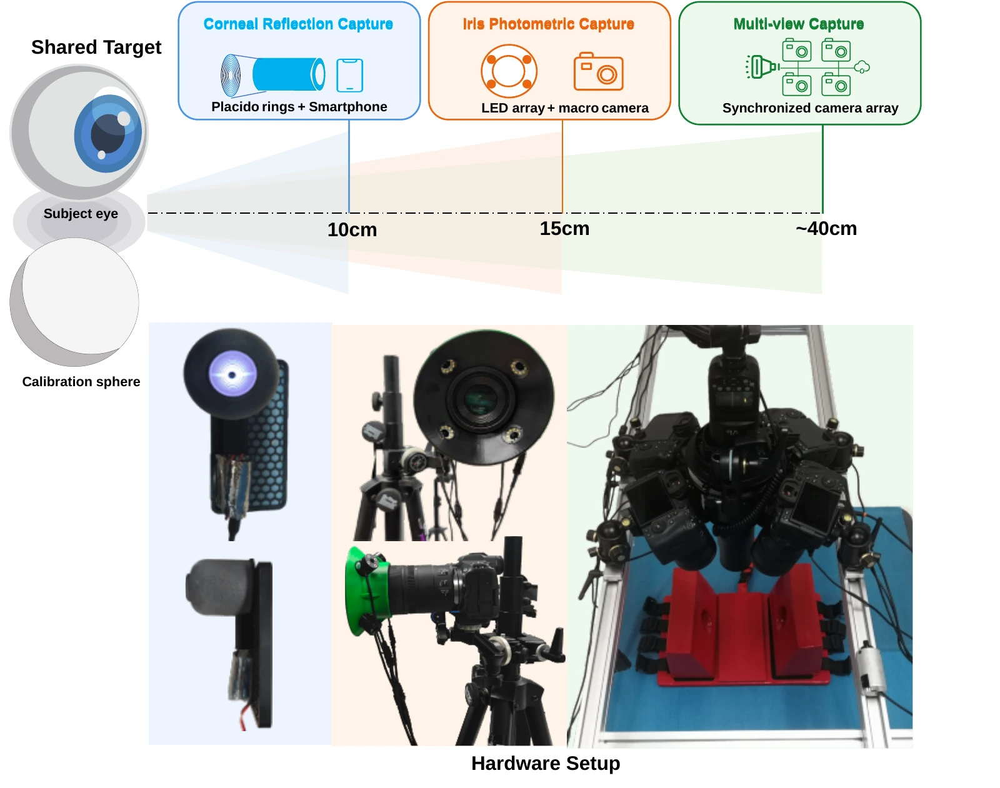
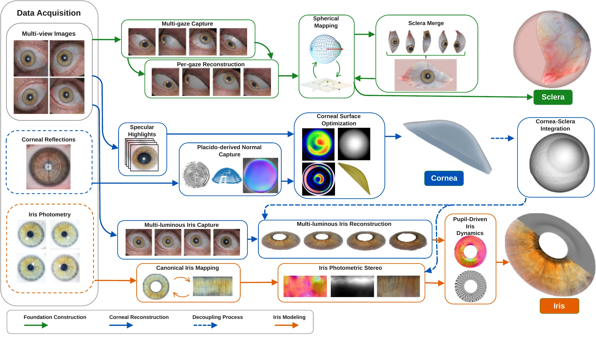
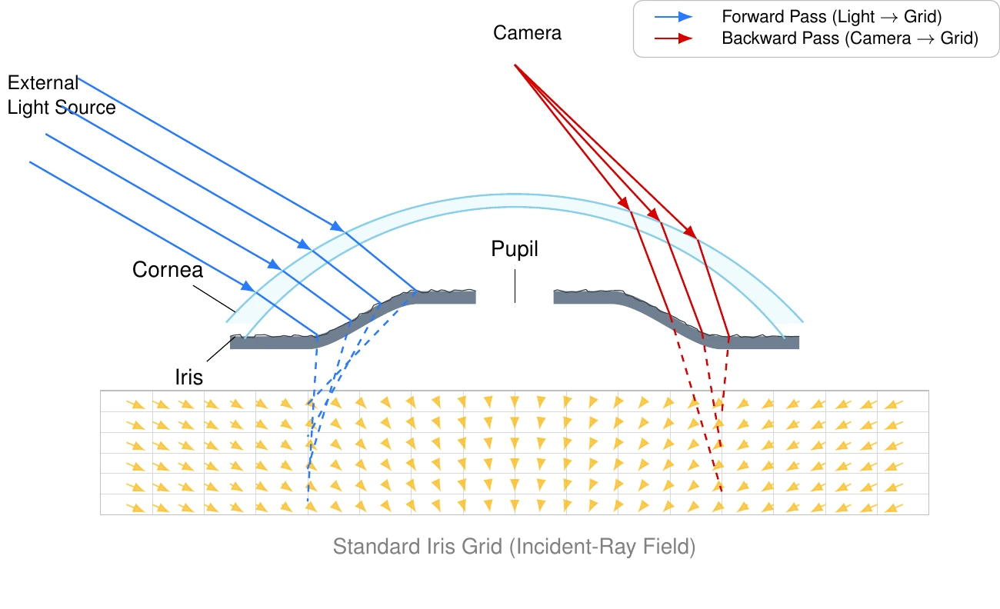
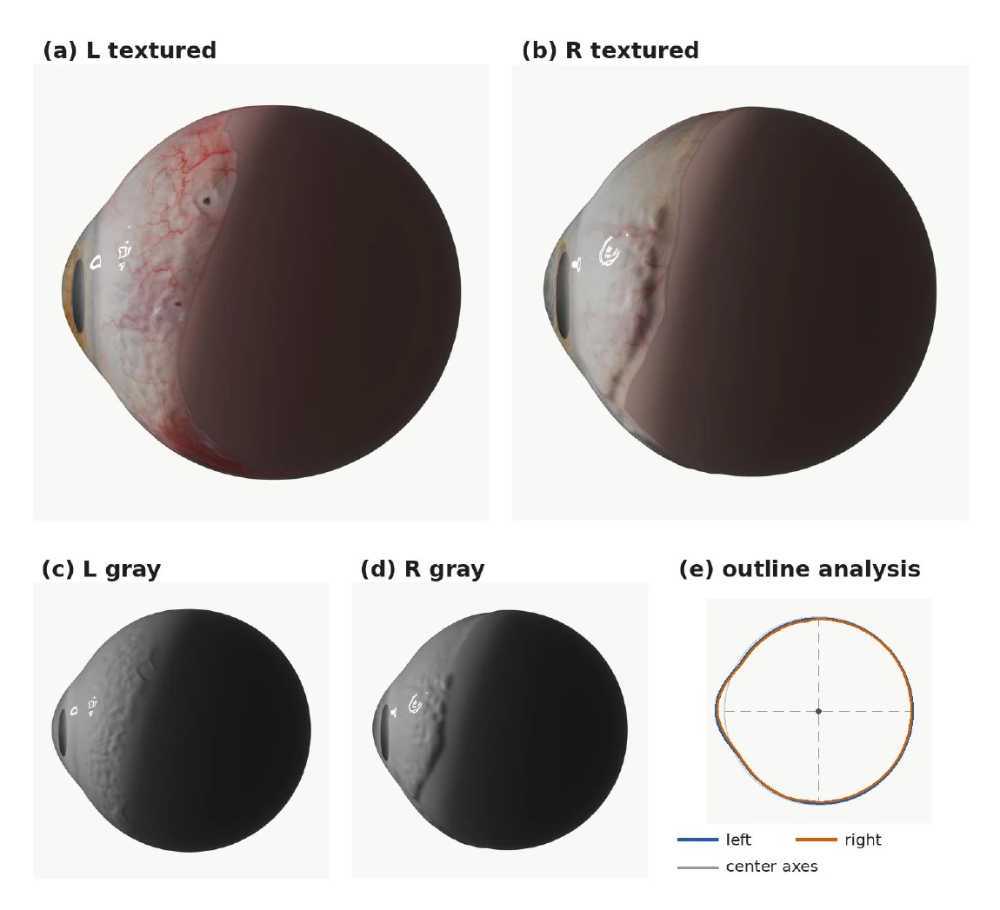
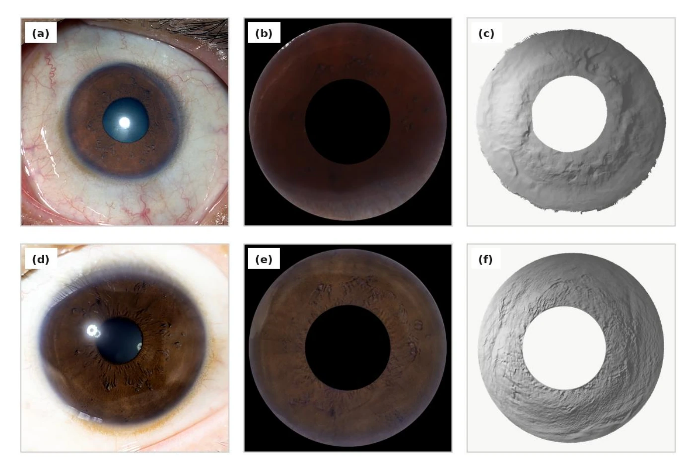
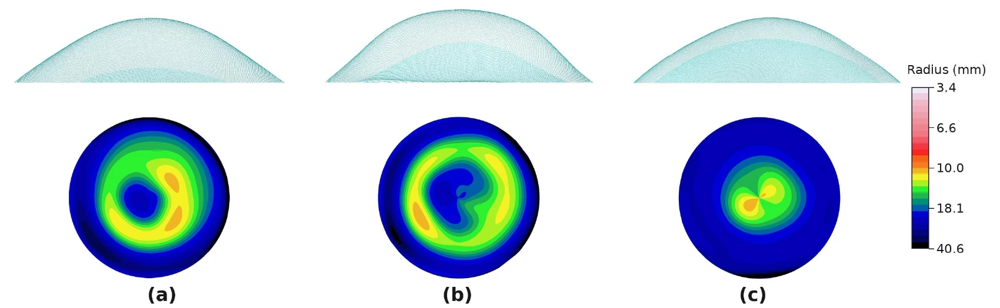
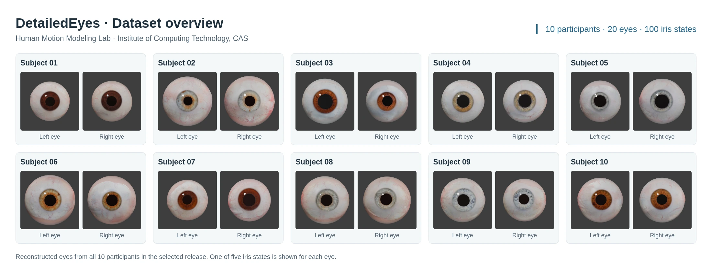

Abstract
Reflection and refraction couple the appearance of the sclera, cornea, and iris in photographs, making fine eye geometry difficult to recover. We present an eye capture system that uses optical measurements tailored to each component. Multi-view, multi-gaze images constrain the scleral shape, specular reflections constrain the corneal surface, and the estimated cornea enables refraction-aware recovery of iris microgeometry.
Across subjects, the reconstructions reveal scleral asymmetry, non-axisymmetric corneal shape, iris relief, and pupil-center motion. The resulting assets support novel-gaze rendering and are available for research through the DetailedEyes@CAS dataset.
Capture System
Three imaging modules collect complementary measurements at different working distances. A calibration sphere establishes the metric scale of the close-range modules, and shared scleral features align the capture blocks in a common eye frame.


- Multi-view camera array
- Synchronized views across gaze directions provide complementary observations of the sclera.
- Placido-ring module
- A close-range camera records concentric rings reflected by the cornea to constrain its surface shape.
- Macro photometric module
- A macro camera and LED array record the iris under different lighting directions to recover fine surface detail.
Reconstruction Method
The reconstruction follows the dependencies between components. The sclera establishes the exterior geometry and boundary, the cornea supplies the optical interface, and iris geometry and appearance are recovered through that interface.

Scleral foundation
Fuse registered multi-gaze observations on an eye-centered spherical map to estimate exterior shape and texture.
Corneal surface
Fit the anterior surface using normals derived from Placido-ring reflections, sparse specular highlights, and the sclera–cornea boundary.
Iris microgeometry
Use the reconstructed cornea to account for refraction when estimating iris albedo, normals, and surface relief.
Refraction-aware iris photometry
The recovered cornea bends both the camera rays and the illumination rays. Tracing both paths through the cornea gives the local lighting direction at each iris point for photometric reconstruction.


Reconstruction Results






Video
DetailedEyes@CAS Dataset
The dataset contains 20 reconstructed eyes from 10 participants, with component meshes, textures, and five model-generated iris states per eye.
For dataset access, please contact Shihong Xia at xsh@ict.ac.cn.

BibTeX
@article{zhang2026capturing,
author = {Zhang, Zhiheng and Yang, Shuang and Xia, Shihong},
title = {Capturing Rich Details of Human Eyes},
journal = {ACM Transactions on Graphics},
year = {2026},
volume = {45},
number = {6},
articleno = {203},
doi = {10.1145/3842575},
url = {https://doi.org/10.1145/3842575}
}